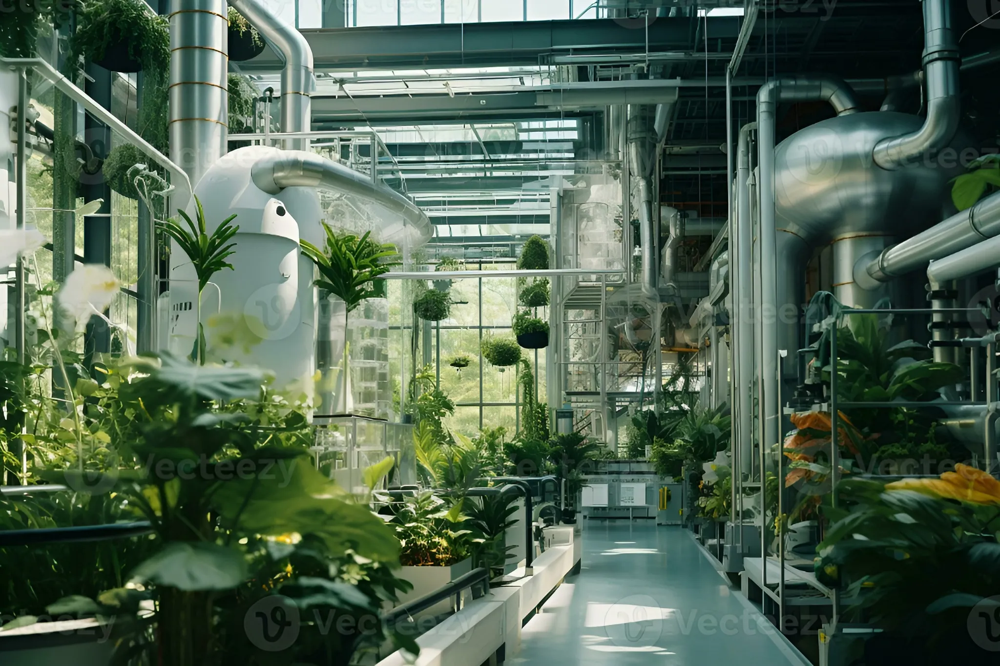

Introduction
A greenhouse ecosystem is a human-made, controlled ecosystem in which plants are grown under regulated environmental conditions such as temperature, humidity, light, and carbon dioxide levels. It is designed to optimize plant growth and productivity.
Structure of Greenhouse Ecosystem
A greenhouse is usually made of transparent materials like glass or plastic that allow sunlight to enter while trapping heat inside. This structure helps maintain a stable internal environment regardless of external weather conditions.
Climate Control
Environmental factors such as temperature, moisture, ventilation, and light are carefully monitored and adjusted. Artificial heating, cooling systems, and irrigation are commonly used to create ideal growing conditions.
Flora
Greenhouse ecosystems support a wide variety of plants including vegetables, fruits, flowers, medicinal plants, and ornamental species. Plants that cannot survive naturally in a region can be cultivated inside greenhouses.
Fauna
Although animals are limited, greenhouse ecosystems may include insects such as bees for pollination, earthworms for soil health, and beneficial microorganisms that support plant growth.
Benefits of Greenhouse Ecosystem
- Year-round crop production
- Efficient use of water and nutrients
- Protection from extreme weather
- Higher crop yield and quality
- Reduced pest damage
Challenges and Limitations
Greenhouse ecosystems require high initial investment, regular maintenance, and energy consumption. Improper management can lead to pest outbreaks or excessive resource use.
Importance of Greenhouse Ecosystem
Greenhouse ecosystems play a significant role in modern agriculture by supporting food security, sustainable farming practices, and efficient resource management, especially in areas with unfavorable natural conditions.
Fun Facts about Greenhouse Ecosystem
- The concept of greenhouses dates back to Roman times, where plants were grown in movable structures.
- Greenhouses can increase plant growth speed by controlling temperature and carbon dioxide levels.
- Some greenhouses are fully automated using sensors and AI-based climate control systems.
- Plants grown in greenhouses often require less pesticide compared to open-field farming.
- Greenhouses make it possible to grow crops in deserts, polar regions, and urban areas.
Conclusion
The greenhouse ecosystem is an advanced, controlled ecosystem that demonstrates how human intervention can enhance plant growth while reducing environmental limitations. With proper management, it contributes significantly to sustainable agriculture.